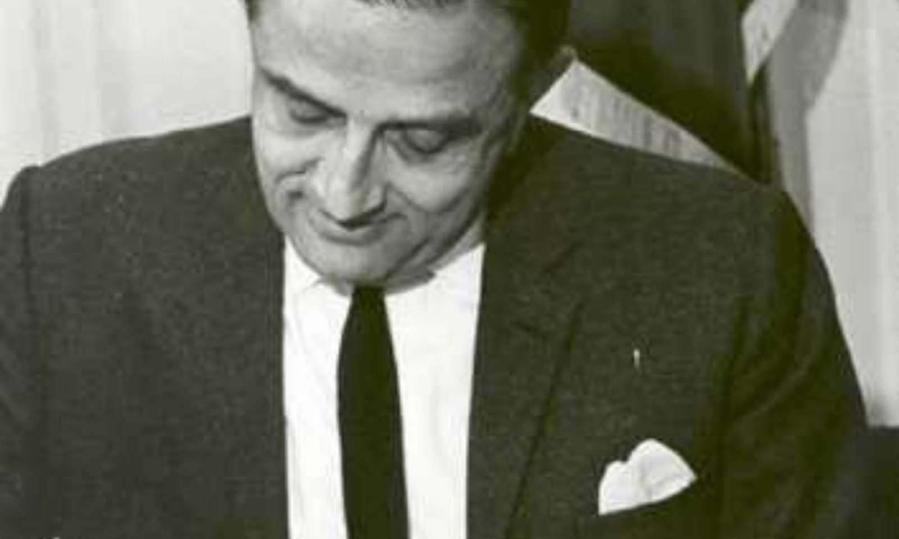

Dr Vikram Sarabhai
12 August 1919 – 30 December 1971

Chairman of Indian National Committee for Space Research and Indian Space Research Organisation
Vikram Ambalal Sarabhaiwas an Indian physicist and astronomer who initiated space research and helped develop nuclear power in India. He was honoured with Padma Bhushan in 1966 and the Padma Vibhushan (posthumously) in 1972. He is internationally regarded as the Father of the Indian Space Program
Distinguished positions
- President of the Physics section, Indian Science Congress (1962)
- President of the General Conference of the I.A.E.A., Vienna (1970)
- Chairman of the Atomic Energy Commission of India (1966–1971)[10][11]
- Vice-president, Fourth UN Conference on 'Peaceful uses of Atomic Energy' (1971)
- Founder and Chairman of Space Applications Centre(1963–1971)